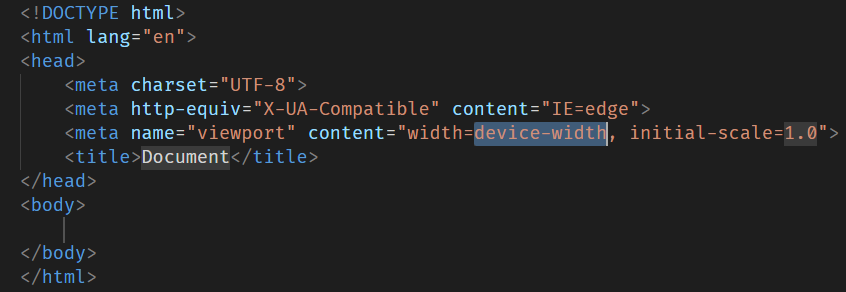

《HTML入门笔记1》
一、HTML的发明者
HTML 的全称是 HyperText Markup Language,中文翻译为超文本标记语言，是由Tim Berners-Lee发明的。更多信息可以在维基百科上看到。
HTML的起手式
在代码编辑器（例如VScode）里输入感叹号“!”,然后按Tab键就可以写出HTML的起手式内容，其内容如下图。
二、HTML常见的表章节的标签
- h1~h6 表示文章的标题，分别是一级标题、二级标题、......、六级标题。
- section 表示含有主题的独立部分，通常用在文档里面表示一个章节。
- article 表示页面里面一段完整的内容，通常表示一篇文章或者一个论坛帖子。即使页面其他部分不存在，也具有独立的意义，可以有自己的标题（h1到h6）。
- main 表示主要内容，即页面的主体内容，一个页面只能有一个main。
- aside 表示旁支内容，用来放置与网页或文章主要内容间接相关的部分。网页级别的aside可以用来放置侧边栏，但不一定在侧边；文章级别的aside可以用来放置评论和注释。
三、标签的全局属性
- class属性用来对网页元素进行分类，通常起标记类型作用。
- contenteditable HTML网页的内容默认用户不能编辑，该属性允许用户修改内容。它有两个可能值：ture或空字符串，表示内容可以编辑；false表示不可以编辑。
- hidden 是一个布尔属性，表示当前的网页元素不再跟页面相关。
- id 元素在网页内的唯一标识符。
- style 用来指定当前元素的CSS样式。
- tabindex 实现按下Tab键遍历网页元素，其属性值为一个整数，表示按下Tab键的时候，网页焦点转移的顺序。
- title 用来为元素添加附件说明。
四、常用的内容标签及其意思
- a (anchor的缩写)链接通过a标签表示，用户点击后，浏览器会跳转到指定的网址。可以跳转到外部页面、跳转内部锚点和跳转到邮箱或电话。
- strong 是一个行内属性，表示它包含的内容具有很强的重要性，需要引起注意。浏览器会以粗体显示内容。
- em（emphasis的缩写）是一个行内标签，表示强调，浏览器会以斜体显示其包含的内容。
- code 是一个行内元素，表示标签内容是计算机代码，浏览器默认会以等宽体字体显示。
- pre 是一个块级元素，表示保留原来的格式（preformatted），即浏览器会保留该标签内部原始的换行和空格。浏览器默认以等宽字体显示标签内容。